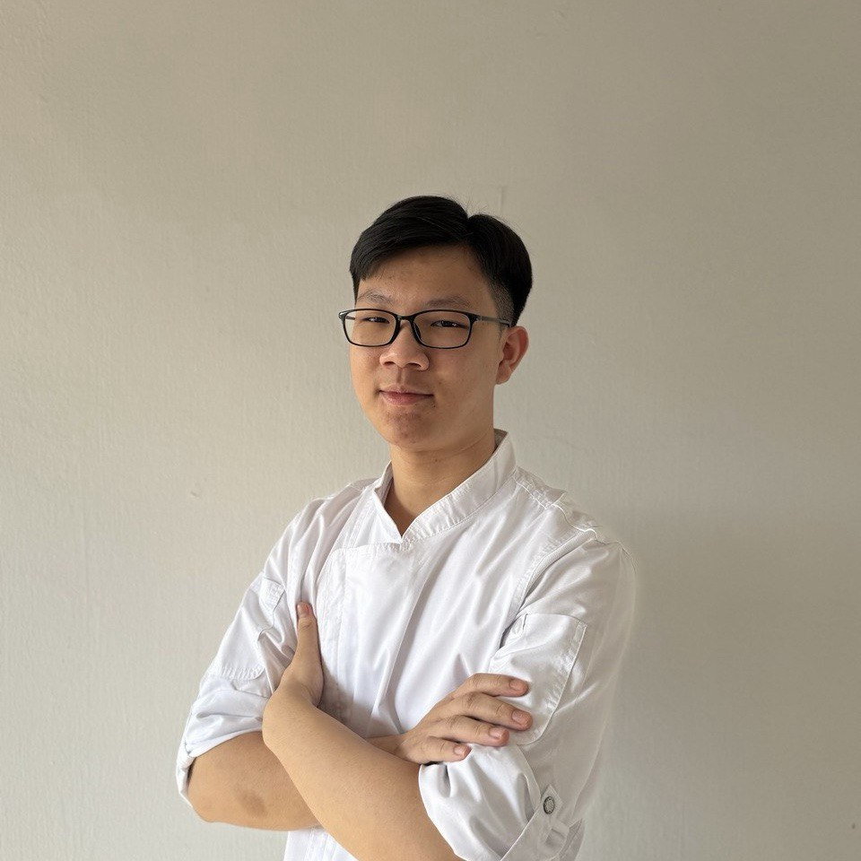
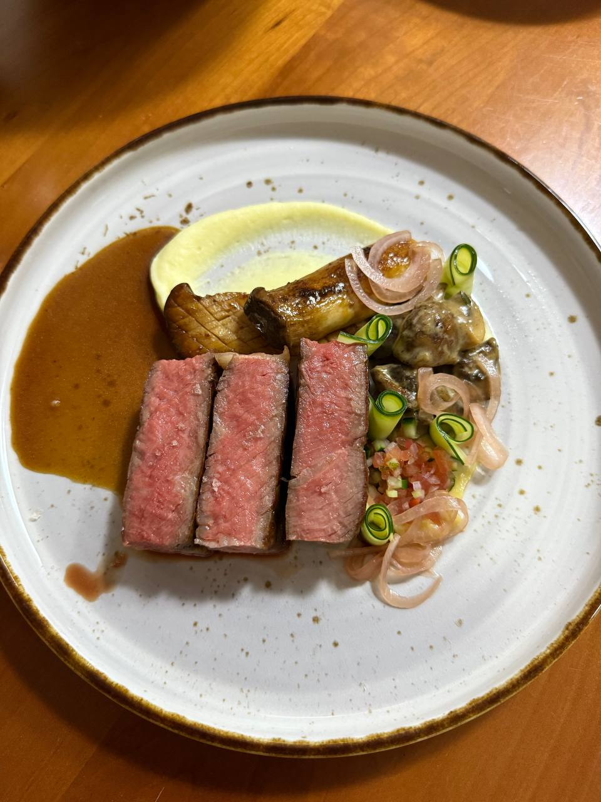
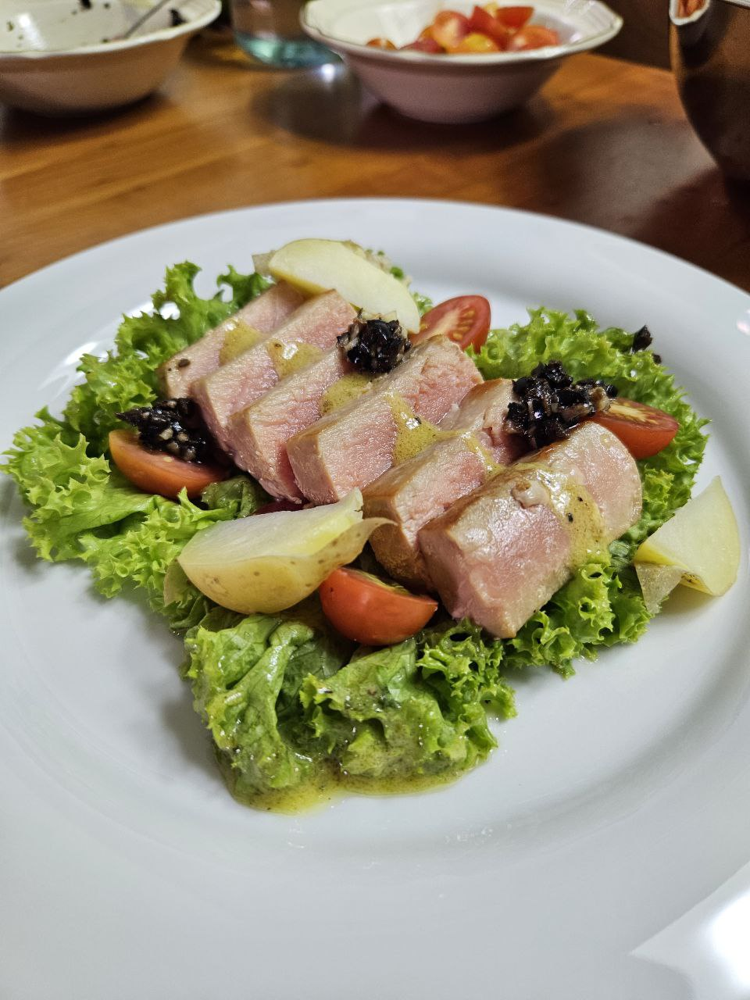
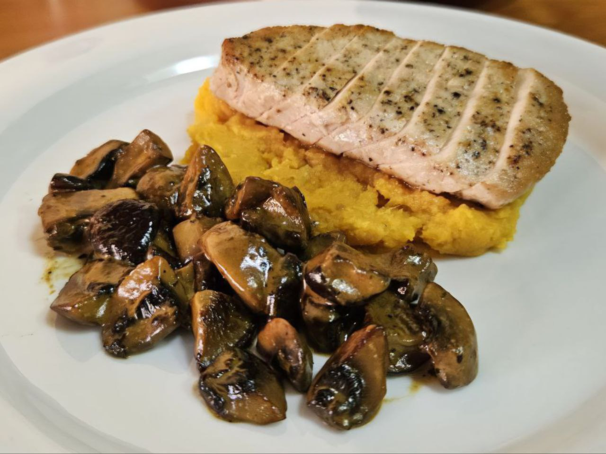
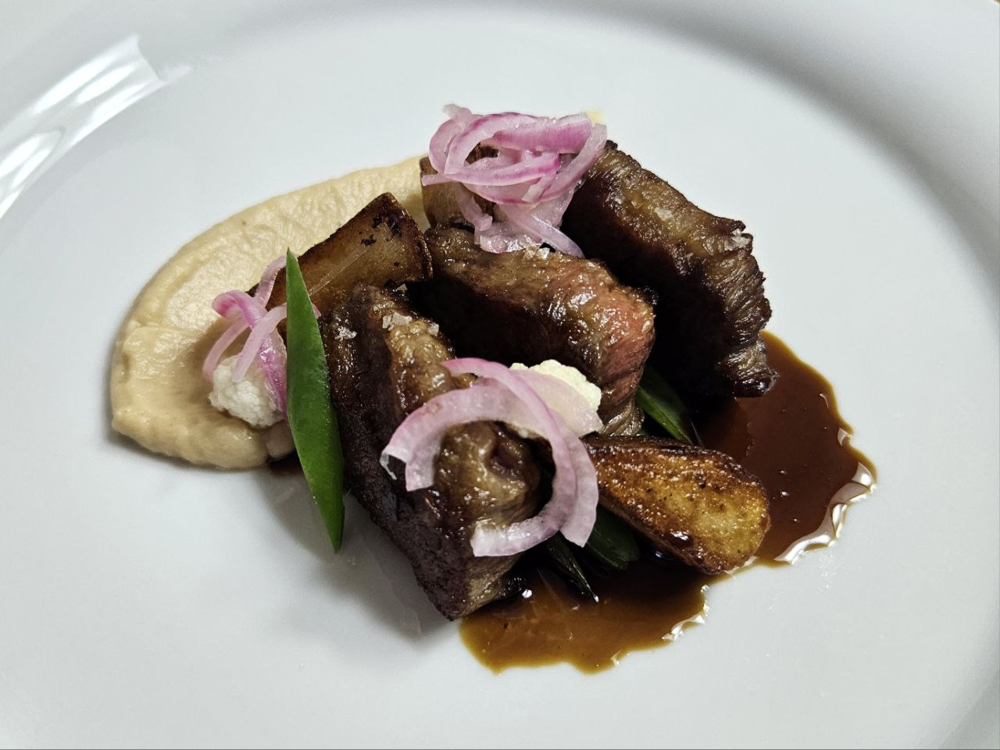

Ko Jia Rong
Aspiring Fine Dining Chef
Passionate about creating unforgettable dining experiences.
Professional Experience
Jan 2026 - Present
Part-time Kitchen Assistant
Binge
Assist in preparation of ingredients and cooking on the grill during service.
Oct 2025 - Feb 2026
Head Chef
L'rez (Degustation menu)
Led a team of 10 chefs for a 3-day long 7-course degustation menu, serving approximately 60 pax per day.
Apr 2025 - Sep 2025
Culinary Intern
Odette, The Lo & Behold Group
Assisted in mise-en-place, organising and cooking on the hot line during service.
Event Experience
Nov 2024
UBS Bank Corporate event
Assisted in assembling ~300 burgers for live station.
Oct 2024
NKF Gala Charity Dinner
Assisted Odette chefs in making langoustine dumplings. Assisted in plating multiple dishes.
Sep 2024
F1 Singapore Grand Prix, Komoco Suite
Assisted in plating and garnishing for live station. Carved lamb racks and ribeye steaks for live station.
Dec 2023
Singapore Chef's Association (SCA) Gala Dinner
Assisted in carving roasted meats for live station.
Areas of Competence
Culinary Techniques
Classical French · Asian Fusion · Contemporary Methods
Management
Team Leadership · Decision-making · Resource control
Kitchen Operations
Prep & Service · Speed & Consistency · Standards & Safety
Achievements
-
Silver Award
Food & Hospitality Asia (FHA) Horeca 2025 Individual Challenge
Practical Hot Cooking - Main Course Meat / Poultry / Game -
“Best Unilever Future Menu” Award
Singapore Top Young Chef 2024 Chef-preneur Challenge
-
Vice President of the Diploma in Food & Beverage Business Club
Organised a hands-on whisking activity for students during NYP EAE tour 2024 and NYP Open House 2025. Organised the production of ~200 cookies for an in-school bazaar.
Culinary Gallery



